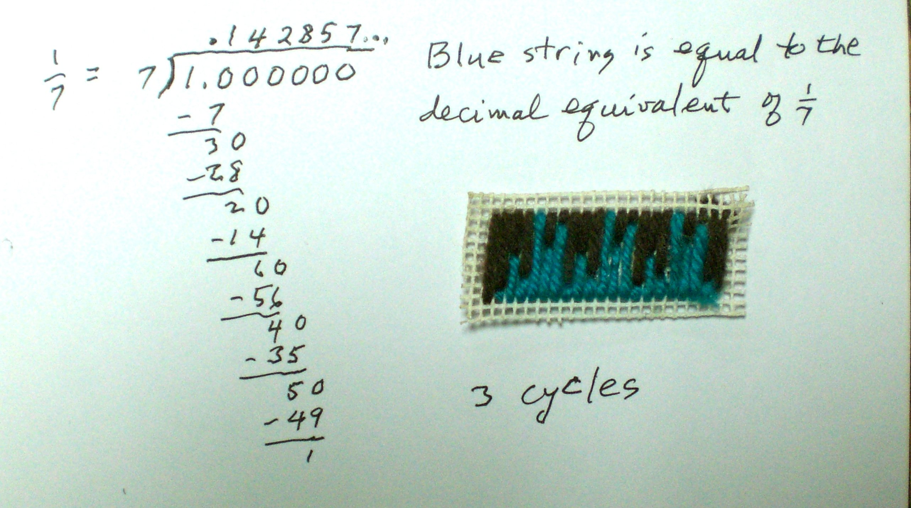

The first one below was made many years ago by one of Don's students.
It was tacked to the door in Don's mathroom, fell off the door
recently (a mess) and Don rewrote it , reglued it, photograped it, and
uploaded the photo to his computer.

Don started talking about it with one of his student's
grandmother, who then brought back a needle, some yarn and some needle
point backing for him to keep! The next day 12 Jan 2012, a 3rd grader
Ashley, learned how
to divide 1 by 7 (using short division), with her Mom involved also, and
looked at the cyclic
6-digit pattern 1,4,2,8,5,7, 1,4,2,8,5,7.... They took home some of the
yarn and backing, were
going to pick up some needles and do their own infinite repeating
decimals using the needle point, like this, with 2/7 or 3/7...
On the following Sunday 15 Jan 2012, Don worked with Sara, a 5th
grader, who said she was going to study how to change a fraction to a
decimal in school next (good timing by Don!). She did the division 2/7
using short division. Don showed her the 1/7 with the needle point.
Immediately she asked Don if she could do the pattern with beads! It turns out she is very
proficient using beading (is there a word like this?).- she has made
necklaces and bracelets this way. She brought down her bead collection
from upstairs in Don's house and they talked about what beads to use
for the decmial digits (silver), the background (purple) and making a
title with black letters on white beads.
This was a very exciting few days! Don will add the student (and
parents) work when it comes in.
Ashley, a 3rd grader did this needle point of 3 cycles of 2/7 in green:
Terrific, Ashley!
Cody, a 6th grader, did the following needle point:
Fine job Cody!
Noah, a 5th grader, did this needle point of 3 cycles of 5/7
Fine job Noah!
There is something nice about seeing a color representation of the infinite repeating decimal in needle point!
We can add this to the Hands-on Materials Don uses with students